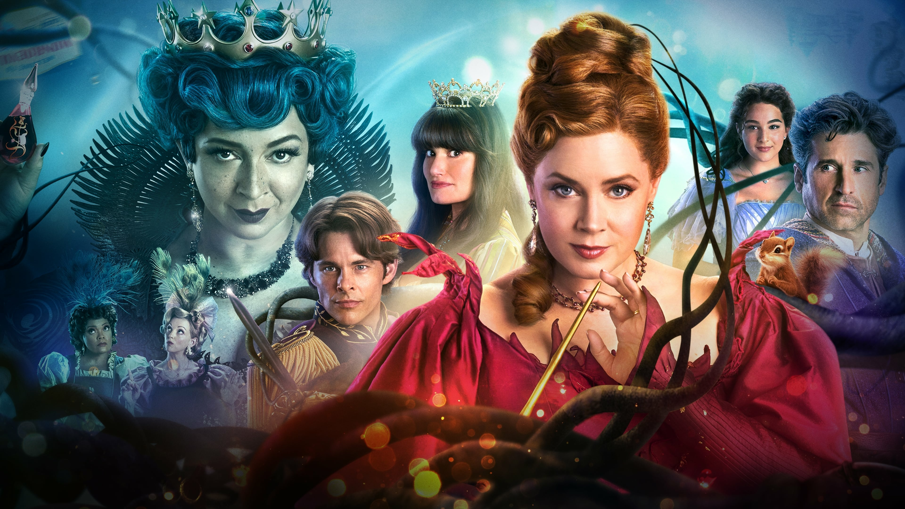
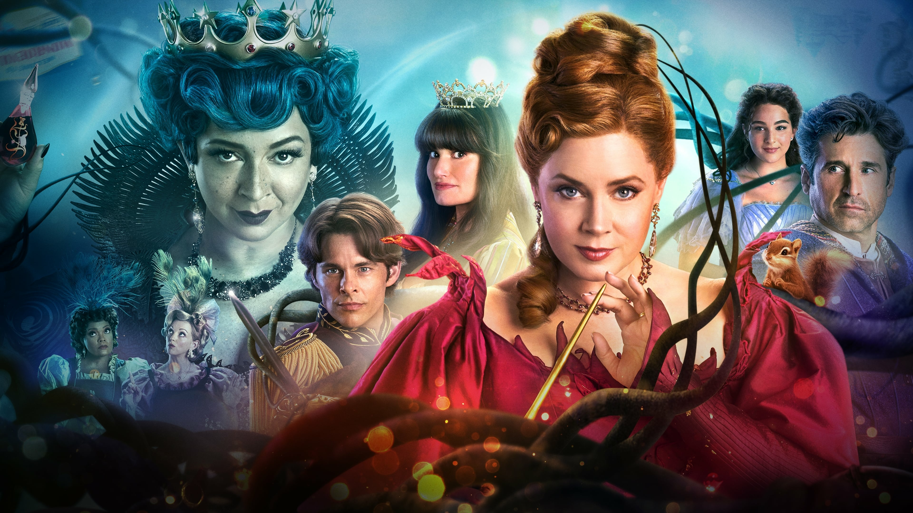
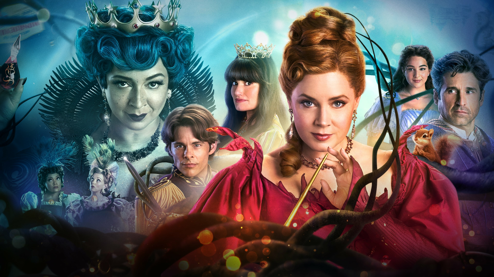
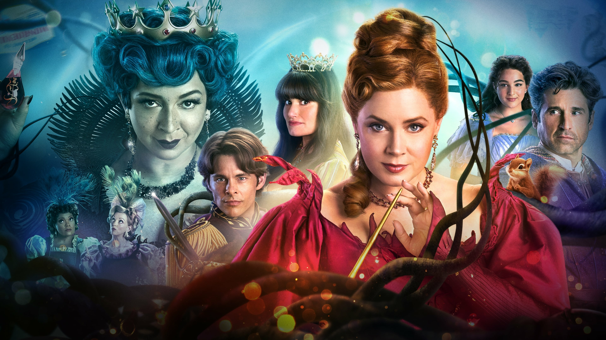

Fantasy
 

Fantasy movies have the power to transport us to magical worlds and immerse us in incredible stories of heroes, villains,
and mythical creatures. Fantasy movies take us to worlds beyond our own, where magic and mythical creatures roam free. They
are full of wonder, adventure, and unforgettable characters that capture our imagination. From beloved classics to recent
blockbusters, here are five recommended movies in the genre of fantasy.
Directed by Peter Jackson In the first installment of the epic trilogy, Frodo Baggins (Elijah Wood) inherits a powerful
ring from his uncle, Bilbo (Ian Holm). With the help of Gandalf (Ian McKellen), a wise wizard, Frodo must journey to Mordor
to destroy the ring before it falls into the hands of the evil Sauron. He is joined by a fellowship of creatures, including
the hobbits Sam (Sean Astin), Merry (Dominic Monaghan), and Pippin (Billy Boyd), the elf Legolas (Orlando Bloom), the dwarf
Gimli (John Rhys-Davies), the human Aragorn (Viggo Mortensen), and the wizard Saruman (Christopher Lee).

Directed by Guillermo del Toro. In this dark fairy tale set in 1944 Spain, young Ofelia (Ivana Baquero) discovers a
mysterious labyrinth and encounters a faun who tells her she is the long-lost princess of the underworld. In order to return
to her rightful kingdom, Ofelia must complete a series of dangerous tasks, all while navigating the violent world of Francoist
Spain. With stunning visuals and a haunting score, Pan's Labyrinth is a visually stunning and emotionally powerful film.

A film directed by Andrew Adamson. Based on the classic book by C.S. Lewis, The Lion, the Witch and the Wardrobe tells the
story of four siblings who discover a magical wardrobe that leads them to the land of Narnia. There, they join forces with the
lion Aslan to defeat the evil White Witch and bring spring back to Narnia. Directed by Andrew Adamson, this movie won an Academy
Award for Best Makeup and Hairstyling.

The first movie in the Harry Potter series, Harry Potter and the Philosopher's Stone introduces us to young orphan Harry as he
discovers he is a wizard and begins his studies at Hogwarts School of Witchcraft and Wizardry. Along with his friends Ron and Hermione,
Harry must face the evil Lord Voldemort and his followers. Directed by Chris Columbus, this movie is a beloved classic and won a BAFTA
award for Best Production Design.

Directed by Rob Reiner This classic fairy tale follows the story of Westley (Cary Elwes), a farmhand who sets out on a quest to rescue
his true love, Buttercup (Robin Wright), from the clutches of an evil prince. Along the way, he encounters a cast of memorable characters,
including the sword-wielding Spaniard Inigo Montoya (Mandy Patinkin) and the giant Fezzik (Andre the Giant). With a mix of adventure, romance,
and comedy, The Princess Bride has become a beloved cult classic.
It is clear that this genre has something to offer for everyone. From magical lands and mythical creatures to epic battles and heartwarming
moments, these films have captured the imaginations of audiences around the world. Whether you're a fan of classic fairy tales, high fantasy,
or modern adaptations, there's something for you on this list. Each film brings its own unique charm and creativity, and they all offer a chance
to escape into a world of wonder and possibility. So why not sit back, grab some popcorn, and let yourself be swept away by the magic and adventure
of these amazing films? So, don't hesitate, give these films a watch and experience the wonder and magic of fantasy for yourself.